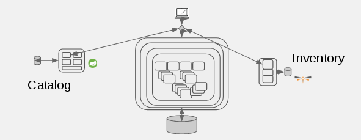

Strangling the Monolith Design Pattern
- Strangling - incrementally replacing functionality in app with something better (cheaper, faster, easier to maintain).
- As functionality is replaced, “dead” parts of monolith can be removed/retired.
- You can also wait for all functionality to be replaced before retiring anything!
- You can optionally include new functionality during strangulation to make it more attractive to business stakeholders.

Steps for Strangling the Monolith
1) Strangle Monolith

2) Add a Microservice

3) And Another
4) Squeeze Monolith

5) And Remove Dead

Step 1
- In this lab, you will begin to ‘strangle’ the coolstore monolith by implementing two of its services as external microservices, split along business boundaries
- Once implemented, traffic destined to the original monolith’s services will be redirected (via OpenShift software-defined routing) to the new services
- We will be using the Fabric8 Maven Plugin to automatically deploy to openshift
- First, build and deploy the catalog microservice (Based on Spring Boot)
$ cd ~/coolstore
$ git clone -b app-partner https://github.com/epe105/catalog
$ cd catalog
Please update <USERNAME> below with your assigned username
$ oc project coolstore-<USERNAME>
$ mvn clean fabric8:deploy -Popenshift -DskipTests
Step 2
Once the new catalog service is deployed, test it with curl:
$ oc get route/catalog
NAME HOST/PORT PATH SERVICES PORT TERMINATION
catalog catalog-coolstore-<USERNAME>.apps.ocp.naps-redhat.com catalog 8080
Curl using the HOST/PORT from the previous step
$ curl http://catalog-coolstore--USERNAME>.apps.ocp.naps-redhat.com/api/catalog
[{"itemId":"329299","name":"Red Fedora","desc":"Official Red Hat Fedora","price":34.99},{"itemId":"329199","name":"Forge Laptop Sticker","desc":"JBoss Community Forge Project Sticker","price":8.5}
...
You can also test it by clicking on the route to the catalog service and adding /api/catalog to the URL:

Step 3
Now we will do the same for the Inventory service, based on WildFly Swarm:
$ cd ~/coolstore
$ git clone -b app-partner https://github.com/epe105/inventory
$ cd inventory
Please update <USERNAME> below with your assigned username
$ oc project coolstore-<USERNAME>
$ mvn clean fabric8:deploy -Popenshift -DskipTests
- The catalog microservice is responsible for retrieving and returning a list of products and their descriptions (price, images, etc).
- The inventory service is responsible for retrieving and returning inventory for a given product.
- The catalog service does not specifically know about or care about inventory. In the next lab we will combine the two!
Step 4
- The inventory microservice has a separate database from the current monolith.
- This allows teams split along business concerns to independently develop, test, deploy and scale the service and its database >Once the new inventory service is deployed, dump its database:
Get the POSTGRESQL_PASSWORD
$ oc env dc/inventory-database --list # get the POSTGRESQL_PASSWORDGet the postgresql pod
$ oc get pods
oc rsh into the postgresql pod from the previous step
$ oc rsh inventory-database-1-kkxs2
sh-4.2$ psql -h $HOSTNAME -d $POSTGRESQL_DATABASE -U $POSTGRESQL_USER
Password for user userV31:XXXXXXXX
psql (9.5.4)
Type "help" for help.
monolith=> select * from inventory;
itemid | link | location | quantity
--------+-----------------------------------+----------+----------
329299 | http://maps.google.com/?q=Raleigh | Raleigh | 736
...
Exit out of psql and then the postgresql pod
monolith=> \q
sh-4.2$ exit
exit
Step 5
Once the new service is deployed, test it with curl
You should get a JSON object representing the inventory availability of product 329299
$ oc get route/inventory
NAME HOST/PORT PATH SERVICES PORT TERMINATION
inventory inventory-coolstore-<USERNAME>.apps.ocp.naps-redhat.com inventory 8080
$ curl http://inventory-coolstore-<USERNAME>.apps.ocp.naps-redhat.com/api/inventory/329299
{"itemId":"329299","location":"Raleigh","quantity":736,"link":"http://maps.google.com/?q=Raleigh"}
You can also test it by clicking on the route to the inventory service and adding /api/inventory/329299 to the URL
Strangling Your Monolith Lab Architecture
Once the new Microservices are deployed, this is the Architecture of this Lab
